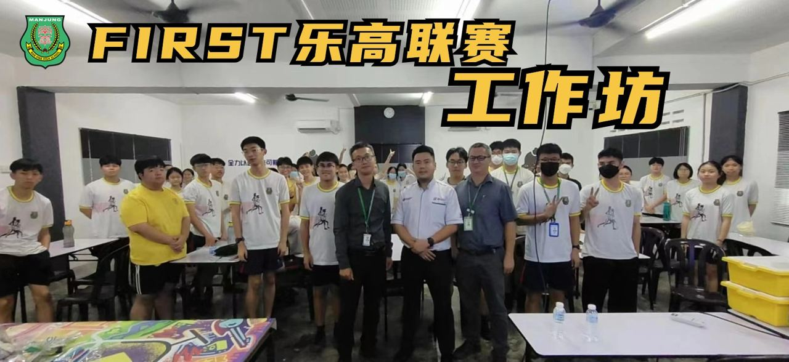
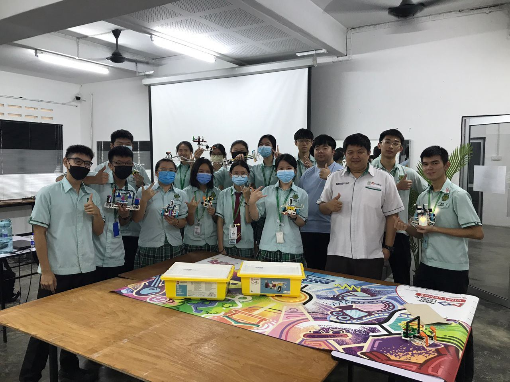
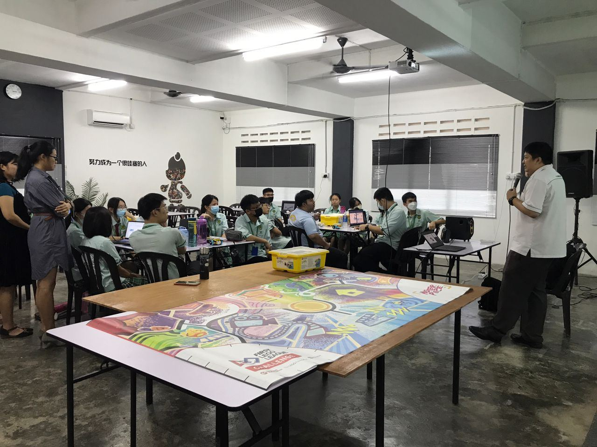
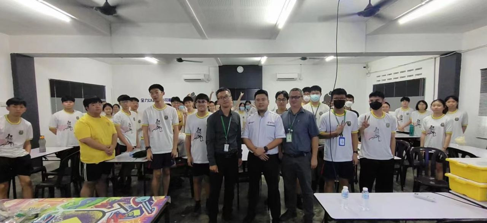
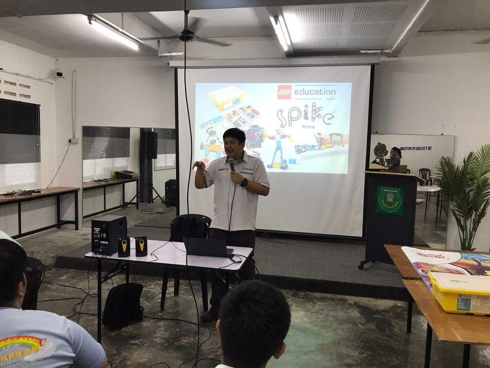
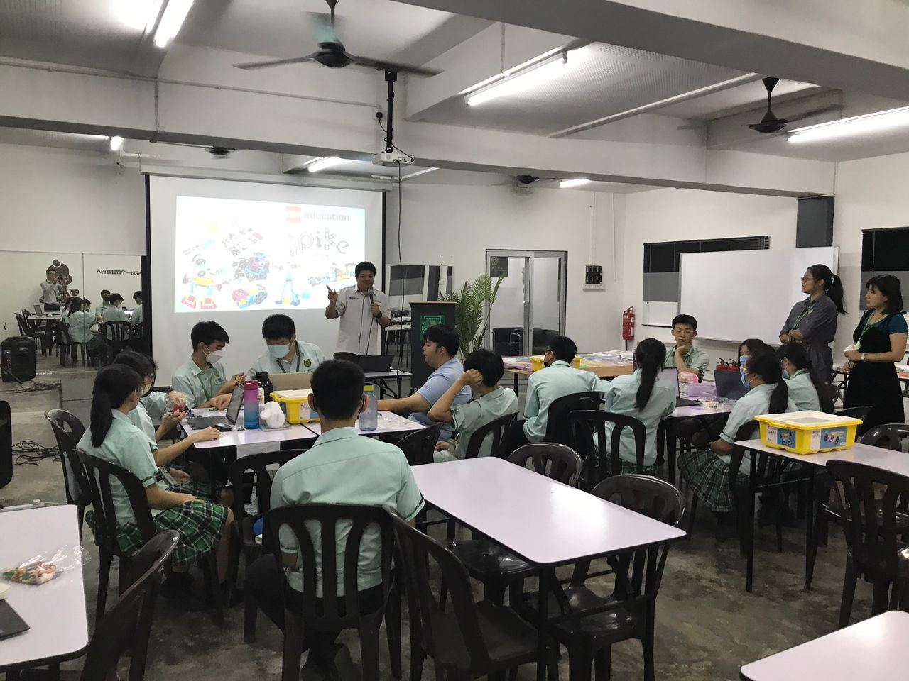
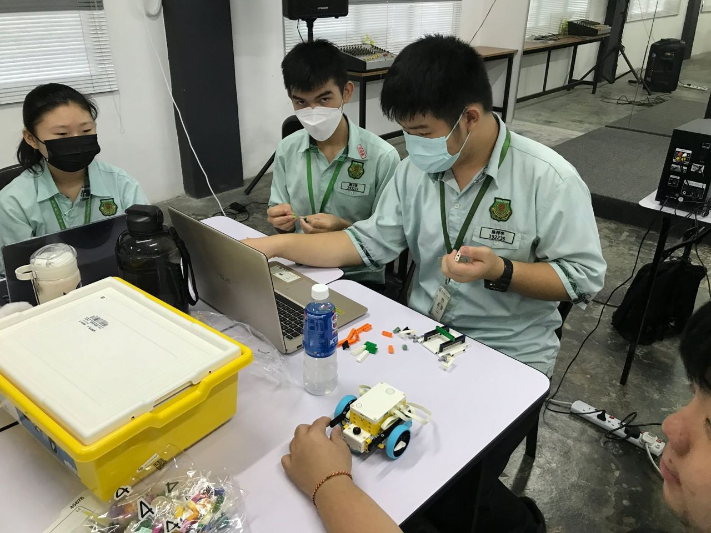

南华独中15位种子选手诞生
南华独中15位种子选手诞生
代表迎战FIRST乐高联赛
本校为了遴选与培训2024年FIRST乐高联赛（First Lego League）种子选手及队伍，于日举办工作坊，邀请SASBADI专业技术人员莫哈末亚菲兹前来给予学生赛前培训在，最终共有15名学生脱颖而出，成立两支队伍代表南华独中参加比赛。
本次工作坊主要宗旨为培训学生学习基本的机器人设计和编程技能，培养团队合作和沟通能力，提高解决问题的创造性思维和灵活性，以及鼓励学生探索科学、技术、工程和数学（STEM）应用。工作坊内容包括有机器人设计和构建、编程技能、比赛策略、团队合作和沟通协作。
南华独中科技总监万顺华老师受访时表示，本校将迈入全新的机器人之旅，让学生能够探索机器人的未来世界，并锻炼学生培养团队精神、创新能力和问题解决技能，以应对机器人领域的挑战。万老师表示，经过精心策划上述丰富的内容，是为了确保学生在各个方面都能得到充分的培训，并提供学生全面发展的机会与平台，为比赛做好充分准备。
南华独中校长陈丽冰博士表示，在当今快速发展的时代，科技已经成为塑造未来的关键力量。通过科技的启蒙，学生们将能够更好地适应未来的挑战和机遇。科技不仅仅是一门学科，更是培养学生创新思维、解决问题的能力以及团队协作的有力工具。本校学生展现出的高度专注与兴趣。在最近的科技工作坊中，我们亲眼见证了学生们对于机器人设计和编程的热情。这种专注和热情不仅是对知识的渴望，更是对未来挑战的勇敢迎接。
#乐高联赛 #FIRST #工作坊 #种子队伍
#南华独中 #曼绒 #实兆远






